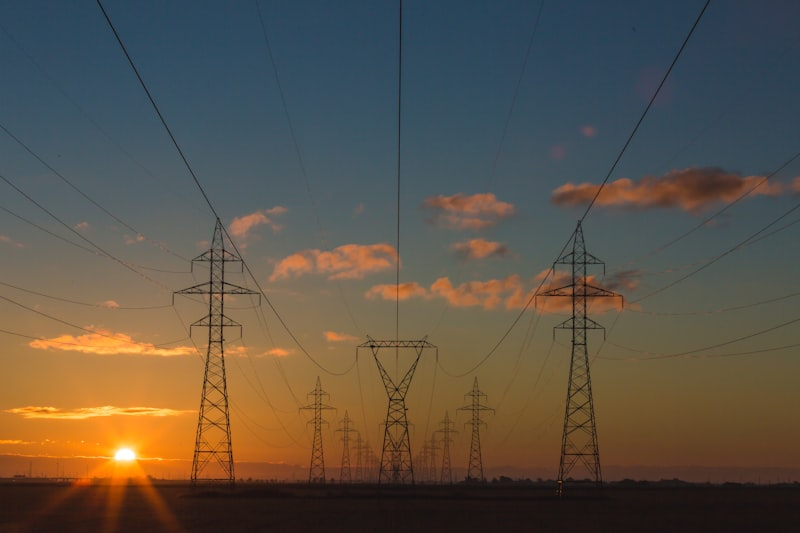

Langkah Nyata Menghemat Energi di Sekolah.
Dimulai Hari Ini.
Platform kampanye berbasis data kuesioner 636 siswa kelas XI untuk mendorong efisiensi listrik, memutus pemborosan daya siaga, dan membangun budaya peduli lingkungan yang berkelanjutan.

3.5 Jam / Hari Pengurangan
Potensi pemangkasan durasi alat listrik menyala tanpa penghuni.
Fakta Angka Penggunaan Energi
Data kuantitatif yang dikumpulkan dari 636 siswa kelas XI untuk memetakan kebiasaan pemakaian listrik harian.
Dampak Nyata Pemborosan Listrik
Meninggalkan saklar lampu, AC, atau komputer tetap menyala menimbulkan kerugian berantai bagi sekolah dan bumi.
Beban Finansial Sekolah
Arus listrik siaga (*standby power*) dari charger, proyektor, dan monitor lab yang tidak dicabut menyumbang hingga 15% dari total tagihan listrik bulanan tanpa memberikan nilai manfaat belajar.
Pelepasan Emisi Karbon
Mayoritas pasokan listrik jaringan nasional masih bersumber dari pembangkit fosil batu bara. Setiap 1 kWh listrik yang terbuang melepaskan rata-rata 0.85 kg emisi karbon (CO₂) ke atmosfer.
Penyusutan Usia Perangkat
Komputer lab dan lampu yang dibiarkan menyala terus-menerus mengalami panas berlebih (*overheating*), mempercepat kerusakan kapasitor, panel LCD, dan modul daya sebelum batas usia pakainya.
Simulasi Penghematan Energi Sekolah
Geser nilai kontrol di bawah ini untuk melihat estimasi penghematan listrik, pengurangan biaya, dan pencegahan emisi karbon per bulan.
Estimasi Penghematan Bulanan
Berdasarkan 22 hari kegiatan belajar mengajar.
Target Capaian Kampanye
Tolok ukur keberhasilan implementasi program hemat energi di lingkungan sekolah.
Partisipasi Kuesioner Siswa
636 responden dari total 639 siswa kelas XI.
Adopsi SOP Lab Komputer
Pelaksanaan 5 Menit Terakhir di Lab PPLG & MPLB.
Pengurangan Durasi Standby
Penurunan jam lampu/AC menyala saat kelas kosong.
Kebiasaan Kecil, Dampak Nyata
Tindakan mudah yang dapat kamu mulai lakukan hari ini di berbagai sudut sekolah.
Manfaatkan Cahaya Alami
Buka tirai jendela pada pagi hari pukul 07.00–10.00 dan matikan baris lampu yang berada di samping jendela.
Zero Watt Saat Istirahat
Biasakan mematikan saklar lampu dan kipas angin setiap kali seluruh siswa keluar kelas untuk istirahat atau olahraga.
Proper Shut Down PC Lab
Matikan monitor dan unit PC melalui menu Shut Down resmi 5 menit sebelum bel jam pelajaran praktikum berakhir.
Putus Steker Terminal Meja
Cabut kabel charger laptop setelah daya baterai terisi penuh untuk menghentikan konsumsi daya siaga (*vampire power*).
Matikan Lampu Toilet Kosong
Periksa saklar saat meninggalkan kamar mandi sekolah. Jangan biarkan lampu menyala saat tidak ada orang di dalam.
Saling Mengingatkan Tanpa Sungkan
Ajak teman dengan sapaan hangat untuk bersama-sama menjaga saklar listrik di ruang bersama tetap terkontrol.
Alur Sistematis dari Data ke Aksi
Tiga tahapan terukur yang menghubungkan kesadaran, verifikasi angka, hingga pembiasaan nyata.
Pahami Masalah
Mengidentifikasi titik-titik pemborosan listrik di sekolah yang kerap diabaikan dalam rutinitas belajar sehari-hari.
Pelajari Bukti Data
Menganalisis hasil kuesioner 636 responden untuk melihat butir kebiasaan yang membutuhkan perhatian khusus.
Lakukan Aksi Nyata
Menerapkan 4 rekomendasi konkret, mengikuti Tantangan 7 Hari, dan menetapkan komitmen hemat energi.